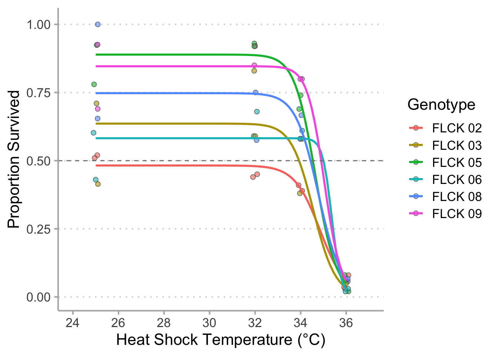
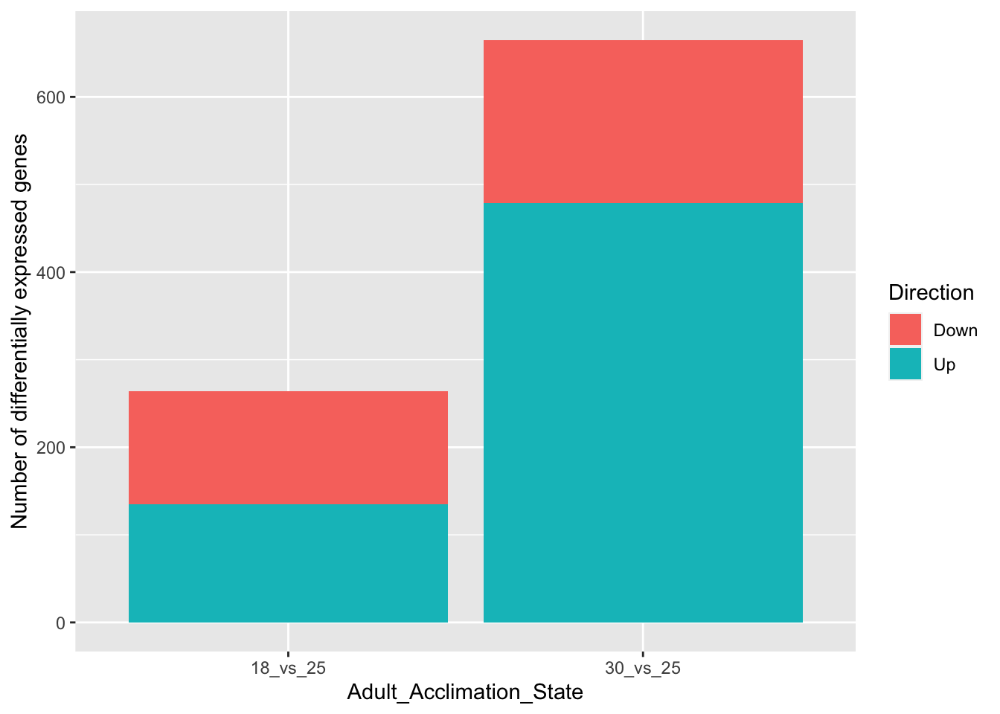
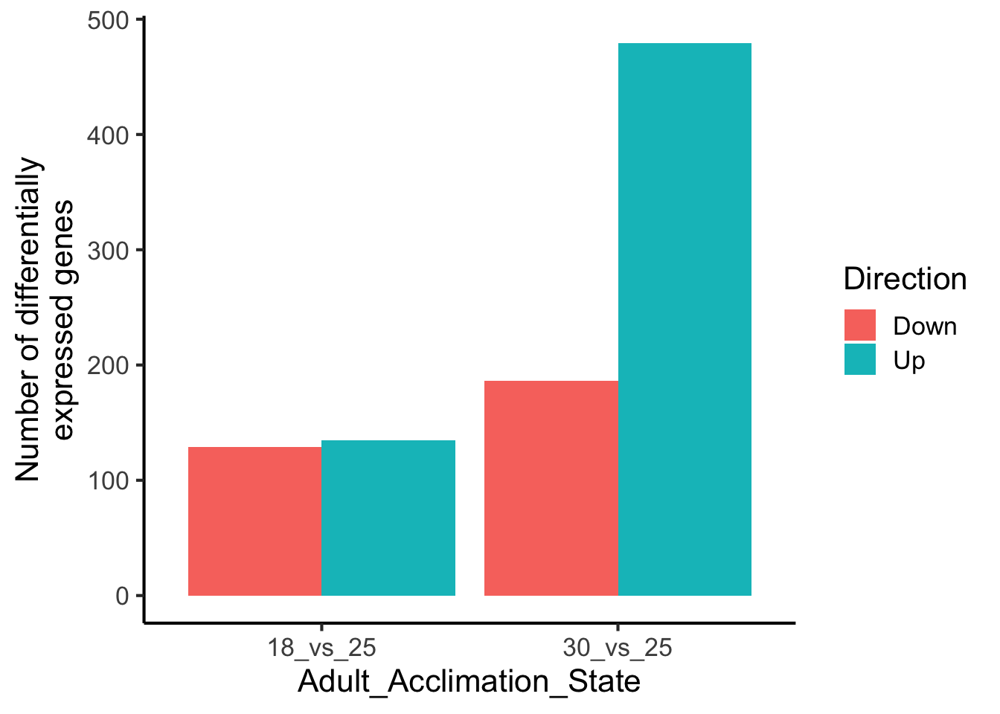
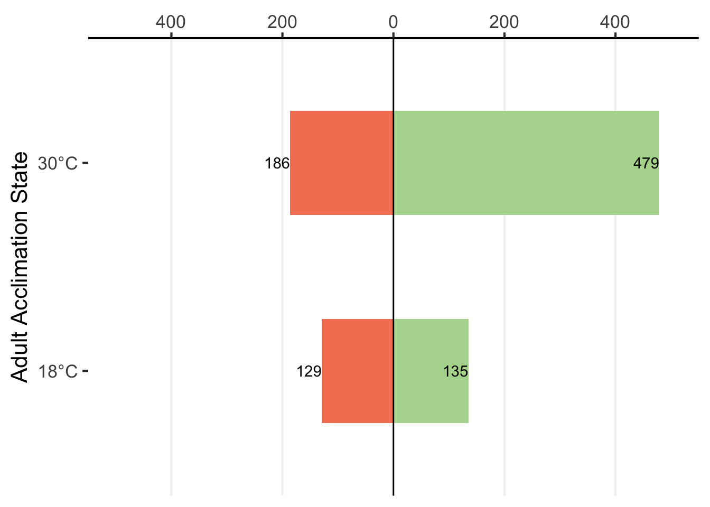
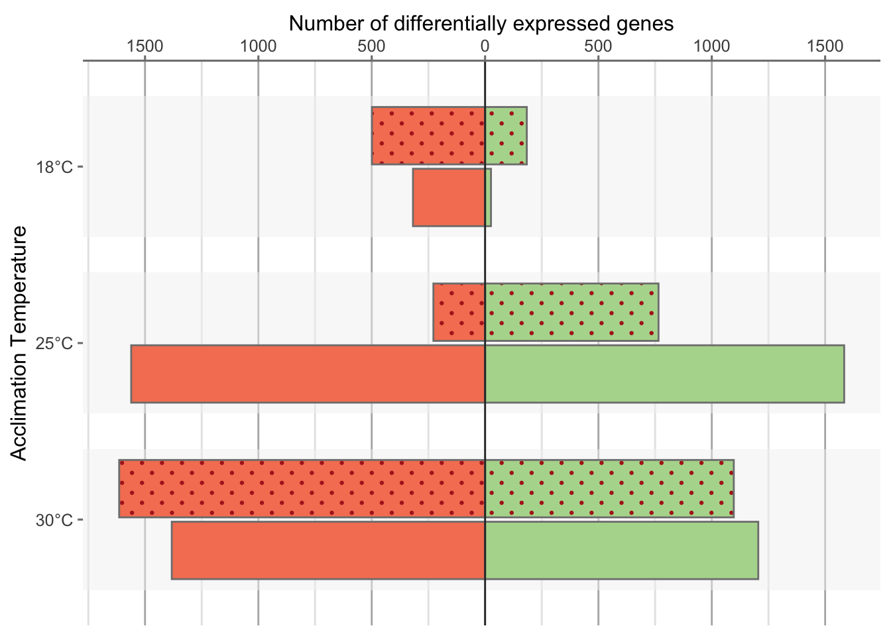
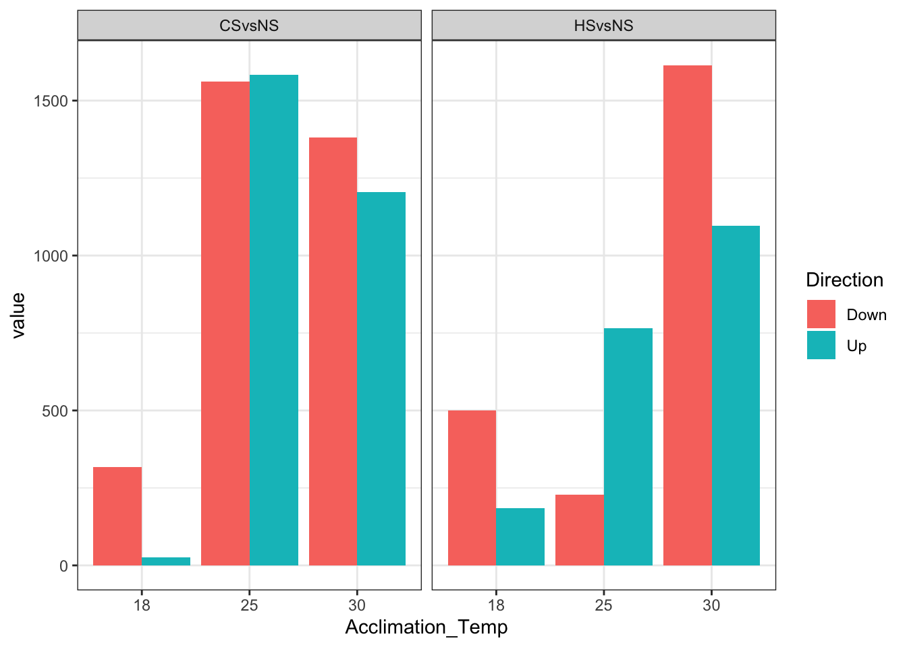

10 Designing Final Figures
10.1 Alex
# Load packages
require(tidyverse)
require(drc)
# Loading required package: drc
# Loading required package: MASS
#
# Attaching package: 'MASS'
# The following object is masked from 'package:dplyr':
#
# select
#
# 'drc' has been loaded.
# Please cite R and 'drc' if used for a publication,
# for references type 'citation()' and 'citation('drc')'.
#
# Attaching package: 'drc'
# The following objects are masked from 'package:stats':
#
# gaussian, getInitial
# Load data
surv <- read_csv("student_data/raw_survival_alex_18JUL2022.csv")
# Rows: 81 Columns: 6
# ── Column specification ────────────────────────────────────────────────────────
# Delimiter: ","
# chr (2): Genotype, Shock_Date
# dbl (4): Temperature, Eggs, Hatched_24, Hatched_48
#
# ℹ Use `spec()` to retrieve the full column specification for this data.
# ℹ Specify the column types or set `show_col_types = FALSE` to quiet this message.
# Make plot
surv %>%
filter(!str_detect(Genotype, "Canton") &
!str_detect(Genotype, "FLCK")) %>%
mutate(Prop_Hatched = Hatched_48/Eggs) %>%
ggplot(aes(x = Temperature,
y = Prop_Hatched,
color = Genotype)) +
geom_point() +
geom_smooth(method = drm,
method.args = list(fct = LL.3()),
se = FALSE) +
geom_hline(yintercept = 0.5,
color = "grey50",
linetype = 2) +
labs(x = "Heat Shock Temperature (°C)",
y = "Proportion Hatched") +
ylim(c(0,1)) +
theme_minimal()
# `geom_smooth()` using formula 'y ~ x'
10.2 Catherine & Caleb
# Load data
df <- read_csv("student_data/changes_in_HS_CS_at_AA.csv")
# Rows: 12 Columns: 4
# ── Column specification ────────────────────────────────────────────────────────
# Delimiter: ","
# chr (2): Shock, Direction
# dbl (2): Acclimation_Temp, value
#
# ℹ Use `spec()` to retrieve the full column specification for this data.
# ℹ Specify the column types or set `show_col_types = FALSE` to quiet this message.
# Make plot
df %>%
mutate(Acclimation_Temp = factor(Acclimation_Temp)) %>%
ggplot(aes(x = Acclimation_Temp,
y = value,
fill = Direction)) +
geom_bar(stat = "identity",
position = "dodge") +
theme_bw() +
facet_wrap(~ Shock) 
# Make plot
df %>%
mutate(Acclimation_Temp = factor(paste0(Acclimation_Temp, "°C"),
levels = c("30°C", "25°C", "18°C"))) %>%
mutate(DEGs = ifelse(Direction == "Up", value, -value)) %>%
ggplot(aes(y = Acclimation_Temp,
x = DEGs,
fill = Direction)) +
geom_bar(stat = "identity",
position = "identity",
color = "grey50") +
scale_fill_manual(values = c("#a2d2ff", "#ffafcc")) +
theme_classic() +
scale_x_continuous(breaks = seq(from = -1500, to = 1500, by = 500),
label = abs(seq(from = -1500, to = 1500, by = 500)),
name = "Number of differentially expressed genes") +
ylab("Acclimation Temperature") +
theme(legend.position = "none",
panel.grid.major.x = element_line(color = "grey70",
size = 0.5),
panel.grid.minor.x = element_line(color = "grey90",
size = 0.5)) +
facet_wrap(~ Shock,
nrow = 2)
# Change shock name
df %>%
mutate(Shock = ifelse(Shock == "CSvsNS",
"Acute Cold Shock",
"Acute Heat Shock")) %>%
mutate(Acclimation_Temp = factor(paste0(Acclimation_Temp, "°C"),
levels = c("30°C", "25°C", "18°C"))) %>%
mutate(DEGs = ifelse(Direction == "Up", value, -value)) %>%
ggplot(aes(y = Acclimation_Temp,
x = DEGs,
fill = Direction)) +
geom_bar(stat = "identity",
position = "identity",
color = "grey50") +
scale_fill_manual(values = c("#a2d2ff", "#ffafcc")) +
theme_classic() +
scale_x_continuous(breaks = seq(from = -1500, to = 1500, by = 500),
label = abs(seq(from = -1500, to = 1500, by = 500)),
name = "Number of differentially expressed genes") +
ylab("Acclimation Temperature") +
theme(legend.position = "none",
panel.grid.major.x = element_line(color = "grey70",
size = 0.5),
panel.grid.minor.x = element_line(color = "grey90",
size = 0.5)) +
facet_wrap(~ Shock,
nrow = 2)
# Dodge by shock
df %>%
mutate(Shock = ifelse(Shock == "CSvsNS",
"Acute Cold Shock",
"Acute Heat Shock")) %>%
mutate(Acclimation_Temp = factor(paste0(Acclimation_Temp, "°C"),
levels = c("30°C", "25°C", "18°C"))) %>%
mutate(DEGs = ifelse(Direction == "Up", value, -value)) %>%
ggplot(aes(y = Acclimation_Temp,
x = DEGs,
fill = Direction,
pattern = Shock)) +
ggpattern::geom_bar_pattern(aes(group = Shock), pattern_color = NA,
color = "grey50",
width = 0.65,
stat = "identity",
position = position_dodge(width = 0.7),
pattern_fill = "red",
pattern_angle = 45,
pattern_density = 0.5,
pattern_spacing = 0.025,
pattern_key_scale_factor = 1) +
geom_vline(xintercept = 0, color = "grey20") +
scale_fill_manual(values = c("#a2d2ff", "#ffafcc")) +
theme_classic(base_size = 12) +
scale_x_continuous(breaks = seq(from = -1500, to = 1500, by = 500),
label = abs(seq(from = -1500, to = 1500, by = 500)),
name = "Number of differentially expressed genes",
position = "top") +
ggpattern::scale_pattern_manual(values = c(`Acute Cold Shock` = "none",
`Acute Heat Shock` = "circle")) +
ylab("Acclimation Temperature") +
theme(legend.position = "none",
axis.line.y = element_blank(),
panel.grid.major.x = element_line(color = "grey70",
size = 0.5),
panel.grid.minor.x = element_line(color = "grey90",
size = 0.5)) 
df %>%
mutate(Shock = ifelse(Shock == "CSvsNS",
"Acute Cold Shock",
"Acute Heat Shock")) %>%
mutate(Acclimation_Temp = factor(paste0(Acclimation_Temp, "°C"),
levels = c("30°C", "25°C", "18°C"))) %>%
mutate(DEGs = ifelse(Direction == "Up", value, -value)) %>%
ggplot(aes(y = Acclimation_Temp,
x = DEGs,
fill = Direction,
pattern = Shock)) +
annotate("rect",
fill = "grey95",
xmin = -Inf, xmax = Inf,
ymin = 0.6,
ymax = 1.4,
alpha = 0.5) +
annotate("rect",
fill = "grey95",
xmin = -Inf, xmax = Inf,
ymin = 1.6,
ymax = 2.4,
alpha = 0.5) +
annotate("rect",
fill = "grey95",
xmin = -Inf, xmax = Inf,
ymin = 2.6,
ymax = 3.4,
alpha = 0.5) +
ggpattern::geom_bar_pattern(aes(group = Shock), pattern_color = NA,
color = "grey50",
width = 0.65,
stat = "identity",
position = position_dodge(width = 0.7),
pattern_fill = "firebrick",
pattern_angle = 45,
pattern_density = 0.3,
pattern_spacing = 0.025,
pattern_key_scale_factor = 1) +
geom_vline(xintercept = 0, color = "grey20") +
scale_fill_manual(values = c("#F58161", "#B3D89C")) +
theme_classic(base_size = 12) +
scale_x_continuous(breaks = seq(from = -1500, to = 1500, by = 500),
label = abs(seq(from = -1500, to = 1500, by = 500)),
name = "Number of differentially expressed genes",
position = "top") +
ggpattern::scale_pattern_manual(values = c(`Acute Cold Shock` = "none",
`Acute Heat Shock` = "circle")) +
ylab("Acclimation Temperature") +
scale_y_discrete(drop = FALSE) +
theme(legend.position = "none",
axis.line.y = element_blank(),
axis.line.x = element_line(color = "grey50"),
axis.ticks = element_line(color = "grey50"),
panel.grid.major.x = element_line(color = "grey70",
size = 0.5),
panel.grid.minor.x = element_line(color = "grey90",
size = 0.5)) 
10.3 Nivea & Sara
# Load packages
require(tidyverse)
require(ggrepel)
# Loading required package: ggrepel
# Load data
df <- read_csv("student_data/send_to_thomas_rRNA.csv")
# Rows: 12545 Columns: 6
# ── Column specification ────────────────────────────────────────────────────────
# Delimiter: ","
# dbl (6): baseMean, log2FoldChange, lfcSE, stat, pvalue, padj
#
# ℹ Use `spec()` to retrieve the full column specification for this data.
# ℹ Specify the column types or set `show_col_types = FALSE` to quiet this message.
# Make plot
df %>%
filter(!is.na(padj)) %>%
ggplot(mapping = aes(x = log2FoldChange,
y = -log10(padj))) +
geom_point(mapping = aes(fill = padj < 0.05 & abs(log2FoldChange) > 2),
color = "grey50",
shape = 21,
alpha = 0.8) +
geom_hline(yintercept = -log10(0.05),
linetype = "dashed",
color = "grey50") +
geom_vline(xintercept = 0,
color = "grey20") +
geom_vline(xintercept = -2,
linetype = "dashed",
color = "grey50") +
geom_vline(xintercept = 2,
linetype = "dashed",
color = "grey50") +
scale_fill_manual(values = c("grey50", "red")) +
scale_size_manual(values = c(1, 2)) +
xlab(expression(paste(log[2], "(fold-change)"))) +
ylab(expression(paste(-log[10], "(p-value)"))) +
scale_x_continuous(limits = c(-12, 12)) +
ylim(c(0, 140)) +
theme_minimal() +
theme(legend.position = "none")